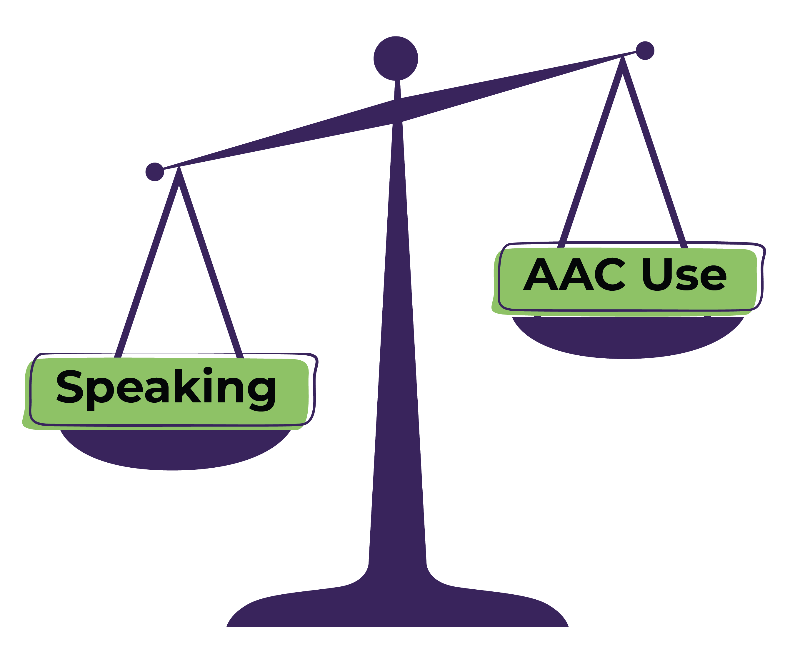

As people who predominantly communicate by speech, the power imbalance between us and AAC users may not be immediately obvious to us. Here, we explore some imbalances and discuss ways to level the communication field.
Listen to this post
To be more mindful and inclusive in our communication, let’s consider the following:
Scenario 1:
Imbalance: The speaking person tends to dominate the conversation by determining the topic and asking A LOT of questions. Here, the AAC user has to talk about what the speaking person wants to talk about
Level: We wait for the AAC user to initiate conversation or invite them to start the conversation. The goal is to use fewer questions and, instead, use more “I wonder” statements like “I wonder what you’d like to talk about.”
Scenario 2:
Imbalance: The speaking person often determines which mode of communication is “best” and forces the AAC user to use that mode. The AAC user may prefer to use a different mode of communication than the one being offered due to emotional or sensory dysregulation.
Level: Remember that AAC users are carrying multiple loads (sensory or motor) which can be impacted to different degrees throughout the day/depending on the context. We can level the scale by allowing the child to communicate with the mode they are most comfortable with at that time.
Note: if you cannot understand what your child is saying, it may be helpful to ask them if they could clarify with their talker or gestures etc.
Scenario 3:
Imbalance: When the speaking person does not offer enough wait time before jumping in and prompting the AAC user on what to say. The AAC User may feel that if they were just given a little more time, they could have formulated a message on their own. Without this wait time, over multiple occurrences, the AAC user learns to wait to be prompted.
Level: Get comfortable sitting in the silence
Scenario 4:
Imbalance: When the speaking person doesn’t confirm the meaning of the message or makes assumptions about the meaning of the message. This can lead to misinterpretation of the message that the AAC user is trying to convey.
Level: We can help a child clarify or co-construct a message with them. Again, using “I wonder” statements for instance, “I wonder if you want to do ____.”
Scenario 5:
Imbalance: The speaking person focuses on technology and strategies above building an authentic relationship with their child by sharing in their interests while the AAC user just wants to be a kid and have fun.
Level: Focus on building rapport and taking interest in the uniqueness of the AAC user.
These different scenarios only scratch the surface of how we can create a supportive environment for AAC users. Let’s equip ourselves with some more insights on how to support AAC users